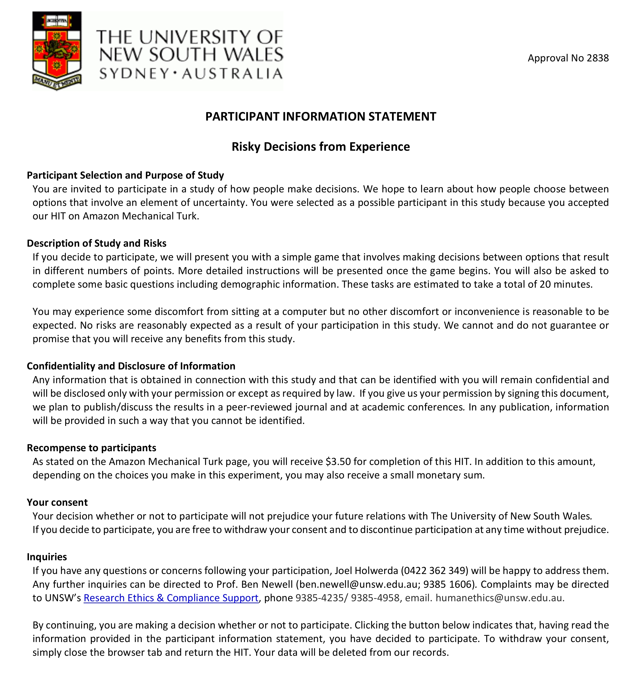

<!DOCTYPE html>
<html lang="en">
<head>
    <meta charset="UTF-8">
    <meta name="viewport" content="width=device-width, initial-scale=1, shrink-to-fit=no">
    <meta http-equiv="X-UA-Compatible" content="ie=edge">
    <title>Experiment</title>
    <!-- jspsych plugins -->
    <script src="scripts/jspsych.js"></script>
    <script src="scripts/plugins/jspsych-bandit-task.js"></script>
    <script src="scripts/plugins/jspsych-fullscreen.js"></script>
    <script src="scripts/plugins/jspsych-instructions.js"></script>
    <script src="scripts/plugins/jspsych-recaptcha.js"></script>
    <script src="scripts/plugins/jspsych-survey-text.js"></script>
    <script src="scripts/plugins/jspsych-survey-multi-choice.js"></script>

    <!-- Fonts and CSS -->
    <link href="https://fonts.googleapis.com/css?family=Open+Sans&display=swap" rel="stylesheet">
    <link rel="stylesheet" href="https://stackpath.bootstrapcdn.com/bootstrap/4.3.1/css/bootstrap.min.css" integrity="sha384-ggOyR0iXCbMQv3Xipma34MD+dH/1fQ784/j6cY/iJTQUOhcWr7x9JvoRxT2MZw1T" crossorigin="anonymous">
    <link href="styles/jspsych.css" rel="stylesheet" type="text/css"></link>
    <link href="styles/bandit-task.css" rel="stylesheet" type="text/css"></link>
    
</head>
<body>
  <!-- Link to jquery and Bootstrap -->
  <script src="https://code.jquery.com/jquery-3.3.1.slim.min.js" integrity="sha384-q8i/X+965DzO0rT7abK41JStQIAqVgRVzpbzo5smXKp4YfRvH+8abtTE1Pi6jizo" crossorigin="anonymous"></script>
  <script src="https://cdnjs.cloudflare.com/ajax/libs/popper.js/1.14.7/umd/popper.min.js" integrity="sha384-UO2eT0CpHqdSJQ6hJty5KVphtPhzWj9WO1clHTMGa3JDZwrnQq4sF86dIHNDz0W1" crossorigin="anonymous"></script>
  <script src="https://stackpath.bootstrapcdn.com/bootstrap/4.3.1/js/bootstrap.min.js" integrity="sha384-JjSmVgyd0p3pXB1rRibZUAYoIIy6OrQ6VrjIEaFf/nJGzIxFDsf4x0xIM+B07jRM" crossorigin="anonymous"></script>
</body>

<!-- Begin javascript code -->
<script>

// Skip to different sections for testing
const noRecaptcha = true;
const testMemory = false;
const testBandit = false;
const shortBandit = false;

// Initialise some variables
let timeline = [];
let trialOrder = null;
let nBlocks = null;
let trialNumber = 0;
let block = 1;
let outcomeArray = [];
let trialInBlock = 0;
let totalPoints = 0;
let contextIndex = 0;
let filenameParent = "";
let filename = "";
let prize = null;

const participantID = Math.floor(Math.random() * 100000);
const turkCode = (Math.floor(Math.random() * 899999) + 100000).toString();
const condition = jsPsych.randomization.sampleWithoutReplacement(["highRank", "lowRank"], 1);
const contextArray = generateContextArray(condition);
const colours = ["#FFD300", "#FF4C4C", "#3FB63F", "#53ACE4"];

// Specify the number of times to repeat each trial type in each block (the order in the array is the same as the bandit task timeline variables)
if (shortBandit) {
  trialOrder = shuffleTrials([3, 6, 1, 1, 1, 1]); // Short version for testing
  nBlocks = 1;
} else {
  trialOrder = shuffleTrials([12, 24, 2, 2, 2, 2]);
  nBlocks = 5
}

// Warn on exit or reload
window.onbeforeunload = function(){
  return "Are you sure you want to leave the experiment?";
};

// Add participant ID and condition to data
jsPsych.data.addProperties({
  participant: participantID,
  turkCode: turkCode,
  condition: condition
});

// Instructions ---------------------------------------------------------------------------------------------

// Welcome page
let welcomePage = {
  type: 'instructions',
  pages: [
    `
      <p><strong>Thanks for accepting the HIT. This experiment is a psychological study that investigates how people make decisions. It involves the following steps:</strong></p>
      <ol>
        <li> <span> This is a University research project so first we need to ask for your informed consent. (The consent form is a standard university document so it might look a little weird on MTurk.)<br></span></li>
				<li> <span> We'll ask for some demographic information. This is not connected to your Amazon ID.<br></span></li>
				<li> <span> We'll give you instructions that explain how to do the task in detail. You will need to pass a short quiz that checks your understanding of how the experiment works.<br></span></li>
				<li> <span> Following the instructions, you will be able to complete the experimental task&#8212a simple game that involves making choices.<br></span></li>
				<li> <span> When you have completed the task, we'll give you the completion code you need to get paid for the HIT.</span></li>
			</ol>
    `,
    `
      <p>
        The experiment should take around <strong>20 minutes</strong>. <br><br> 
        Please <strong>do not</strong> use the "back" button on your browser or close the window until the very end when you receive your completion code.
        Doing so might break the experiment and make it difficult for you to get paid but if something does go wrong, please contact us.
      </p>
    `
  ],
  show_clickable_nav: true,
  show_page_number: true
};

// Consent form
var consent = {
  type: 'instructions',
  pages: [``],
  show_clickable_nav: true,
  button_label_next: "Accept"
}

// reCAPTCHA
var recaptcha = {
  type: 'recaptcha',
  preamble: `<div style="font-size:16pt;">Before we begin the experiment, we just need to check that you're not a robot. Please click the reCAPTCHA checkbox below.</div>`,
  button_label: 'Next'
};

// Colour-blindness
const zeroToNine = ["0", "1", "2", "3", "4", "5", "6", "7", "8", "9"]

var colourBlindness = {
  type: 'survey-multi-choice',
  preamble: '<p style="font-size:16pt;">We also need to check that you have normal colour vision. <br> Please select the number that you can see in the circle below.</p>',
  questions: [
    {prompt: ``, name: "colourBlindness", options: zeroToNine, horizontal: true, required: true}
  ],
  button_label: 'Next',
  randomize_question_order: false,
  data: {task: "demographics"},
}

// Demographics
var demographics = {
  type: 'survey-text',
  task: null,
  preamble: '<strong>Great! Please answer the following demographic questions:</strong>',
  questions: [
    {prompt: 'Age:', value: '', columns: 17},
    {prompt: 'Gender:', value: '', columns: 17},
    {prompt: 'Native languages:', value: '', columns: 17},
    {prompt: 'Country you live in:', value: '', columns: 17}
  ],
  data: {task: "demographics"},
};

// Instructions
let instructions1 = {
  type: 'instructions',
  pages: [
    `<strong>Here's some more information about the experiment:</strong> <br><br>
    You will be presented with a series of choices between four different options.
    Clicking an option will result in winning a number of points that depends on the option you choose.`,
    `Most of the time, you will be presented with two options, similar to the ones below.
    But sometimes, you'll be presented with just one option that you'll have to click to continue.
    `,
    `Your goal is to win as many points as possible.
    Every choice influences the amount of <strong>real money</strong> that you could earn.`,
    `<strong>In addition to the $3.50 you will receive for completing the HIT</strong>, one of your choices will be randomly selected for a bonus payment. 
    You will be given <strong>$1 for every ten points earned from that choice</strong>, so you should try to earn as many points as possible.`,
    `The next screen contains a short quiz to check your understanding of the task. You can review the instructions by clicking the Previous button
    or click Next when you're ready for the quiz.`
  ],
  show_clickable_nav: true,
  show_page_number: true
};

// Instructions attention check -- participants must answer all questions correctly to continue
let quizIncorrect = true;
let quizRepeats = 0;
const question1 = `What is your main objective in the game?`;
const question2 = `Is it possible to earn additional money in the game?`
const question3 = `How many options will be presented on each choice?`
const options1 = [
  "To win the smallest possible number of points.",  
  "To choose options based on my favourite colors.", 
  "To win as many points as possible.", 
  "To figure out the meaning of life."
  
];
const options2 = [
  "No, it is not possible to earn a bonus payment in addition to the standard reward for the HIT.",  
  "Yes! I can earn a bonus payment of $1 for every ten points earned for one randomly selected choice.", 
  "Yes! I can earn a bonus payment of $1 for every 1000 points earned for one randomly selected choice.", 
  "Yes! I can earn a bonus payment of $1 for every ten points earned during the entire game."
];
  const options3 = [
  "Most choices will be between two options but sometimes a single option will be presented.", 
  "Every choice will consist of three options.", 
  "Five and ten options will be presented for each choice.", 
  "Most choices will be between three options."
];
const quizAnswers = `{"Q1":"To win as many points as possible.","Q2":"Yes! I can earn a bonus payment of $1 for every ten points earned for one randomly selected choice.","Q3":"Most choices will be between two options but sometimes a single option will be presented."}`;

let instructionsQuiz = {
  type: 'survey-multi-choice',
  questions: [
    {prompt: question1, name: "Q1", options: options1, required: true},
    {prompt: question2, name: "Q2", options: options2, required: true},
    {prompt: question3, name: "Q3", options: options3, required: true}
  ],
  button_label: 'Next',
  randomize_question_order: false,
  data: {task: "quiz", repeats: quizRepeats},
  on_finish: function(data) {
    if( data.responses == quizAnswers) {
			quizIncorrect = false;
		} else {
      quizRepeats++;
    }
  }
};

// Additional instructions shown before looping (if the participants get at least one question wrong)
let conditionalInstructions = {
  timeline: [
    {
      type: 'instructions',
      pages: [`At least one of your answers was incorrect. Please review the instructions and try again.`],
      show_clickable_nav: true,
      show_page_number: true
    }
  ],
  conditional_function: function(data) {
		return quizIncorrect;
  }
};

// jsPsych looping function for instructions and quiz
let instructionsLoop = {
  timeline: [instructions1, instructionsQuiz, conditionalInstructions],
  loop_function: function(data) {
		return quizIncorrect;
  }
};

// Full screen mode
let fullscreen = {
  type: 'fullscreen',
  message: `Great work! You answered the questions correctly. Click START when you're ready to begin the game.`,
  button_label: "START",
  fullscreen_mode: true
};

// Instructions presented after each block
const blockNames = ["first", "second", "third", "fourth"]

let instructionsBlock = {
  type: 'instructions',
  pages: [],
  show_clickable_nav: true,
  show_page_number: true,
  bandit_task: true,
  // Update message for each block
  on_start: function(trial){
    trial.pages = [
      `This is the end of the ${blockNames[(block - 1)]} block (out of five).
      Take a short break and click Next when you're ready to continue.`
    ]
  },
  // Update block number and reset trialInBlock
  on_finish: function(data) {
    block++;
    trialInBlock = 0;
	}
};

// Instructions presented before the first to mind task
let ftmInstructions = {
  type: 'instructions',
  pages: [
    `<strong>You have finished the first section of the experiment!</strong> <br><br>
    In the next (much shorter) section, you will be presented with each of the options from the previous section
    and asked questions about the outcomes (numbers of points) that you experienced when you selected the option.`
  ],
  show_clickable_nav: true,
  show_page_number: true,
  on_start: function() {
    const pointDraw = jsPsych.randomization.sampleWithoutReplacement(outcomeArray, 1);
    prize = pointDraw / 10;
  }
};

// Instructions presented before the first to mind task
let percentageInstructions = {
  type: 'instructions',
  pages: [
    `You will now be presented with each option again.
    This time, you will be asked to think <strong>only about the times that you selected that option</strong>
    and write the <strong>percentage</strong> of choices that resulted in each outcome listed below the option. <br><br>
    Because your answers are percentages, they should add up to 100.`
  ],
  show_clickable_nav: true,
  show_page_number: true,
};

// Worker ID
var workerID = {
  type: 'survey-text',
  task: 'comments',
  preamble: `
  <span style="font-size:15pt; line-height: 1.6em;">Please enter your Amazon Mechanical Turk <strong>Worker ID</strong>. 
    This will only be used as a backup to ensure payment in case you have issues with the completion code on the next page.</span>`,
  questions: [{value: '', rows: 1, columns: 20}],
  // Save prize amount
  data: function() {
    return {
      task: "demographics", 
      prize: prize
    };
  }
};

// Optional comments
var comments = {
  type: 'survey-text',
  task: 'comments',
  preamble: `
  <span style="font-size:15pt; line-height: 1.6em;">Finally, you can use the textbox below to write any thoughts you have regarding the experiment. 
  Did you use any particular strategies? Were there specific things that influenced your choices? 
  Did you encounter any technical problems or instructions that were unclear? 
  <strong>(Optional)</strong></span>`,
  questions: [{value: '', rows: 10, columns: 50}],
  data: {task: "comments"}
};

// Instructions presented at the end of the experiment
let instructionsEnd = {
  type: 'instructions',
  pages: function() {
    return [`
      You have finished the experiment! Your completion code is <span style="font-weight:bold;font-size:130%">${turkCode}</span>. <br><br> 
      To receive payment for the HIT, return to the Amazon Mechanical Turk page and enter this code.
      In addition to the standard payment, one of your choices was randomly selected and you will recieve an bonus of <span style="font-weight:bold;font-size:130%">$${prize.toFixed(2)}</span>. 
      Please contact us if something goes wrong and we\'ll fix it as quickly as possible. <br><br> 
      Thank you for your help!
      `]
    },
  show_clickable_nav: false,
  show_page_number: false
};

// Bandit task --------------------------------------------------------------------------------------------

// Choose colours and randomise allocation to options
const shuffledColours = jsPsych.randomization.shuffle(colours);

// Set up bandit task trials
let bandit = {
  timeline: [
    {
      type: "bandit-task",
      singleOption: jsPsych.timelineVariable('singleOption'), // Should only one option be presented?
      option1: jsPsych.timelineVariable('option1'), // Name associated with left stimulus
      colour1: jsPsych.timelineVariable('colour1'), // Image for left stimulus
      outcomes1: jsPsych.timelineVariable('outcomes1'), // Array with possible outcomes for left stimulus
      prob1: jsPsych.timelineVariable('prob1'), // Array with probabilites associated with these outcomes
      option2: jsPsych.timelineVariable('option2'), // Name associated with right stimulus
      colour2: jsPsych.timelineVariable('colour2'), // Image for right stimulus
      outcomes2: jsPsych.timelineVariable('outcomes2'), // Array with possible outcomes for right stimulus
      prob2: jsPsych.timelineVariable('prob2'), // Array with probabilites associated with these outcomes
      feedbackDuration: 2000, // How long feedback is displayed
      preTrialInterval: 0 // How long to wait before each trial starts
    }
  ],
  timeline_variables: [
    // Decision trials
    { 
      singleOption: false,
      option1: "safe",
      colour1: shuffledColours[0], 
      outcomes1: [50], 
      prob1: [1], 
      option2: "risky",
      colour2: shuffledColours[1], 
      outcomes2: [30, 70], 
      prob2: [.5, .5]
    },
    // Context trials
    { 
      singleOption: false,
      option1: "worst",
      colour1: shuffledColours[2], 
      outcomes1: 0, 
      prob1: [1],
      option2: "context",
      colour2: shuffledColours[3],  
      outcomes2: () => contextArray[contextIndex],
      prob2: [1]
    },
    // Single option trials
    // Decision trials--option1
    { 
      singleOption: true,
      option1: "safe",
      colour1: shuffledColours[0], 
      outcomes1: [50], 
      prob1: [1], 
      option2: "",
      colour2: [], 
      outcomes2: [],
      prob2: []
    },
    // Decision trials--option2
    { 
      singleOption: true,
      option1: "risky",
      colour1: shuffledColours[1],  
      outcomes1: [30, 70],
      prob1: [.5, .5], 
      option2: "",
      colour2: [], 
      outcomes2: [],
      prob2: []
    },
    // Context trials--option1
    { 
      singleOption: true,
      option1: "worst",
      colour1: shuffledColours[2], 
      outcomes1: 0, 
      prob1: [1], 
      option2: "",
      colour2: [], 
      outcomes2: [],
      prob2: []
    },
    // Context trials--option2
    { 
      singleOption: true,
      option1: "context",
      colour1: shuffledColours[3],  
      outcomes1: () => contextArray[contextIndex],
      prob1: [1], 
      option2: "",
      colour2: [], 
      outcomes2: [],
      prob2: []
    },
        
  ],
    sample: {
        type: 'custom',
        fn: function() {return trialOrder;}
    },
    data: {task: "bandit"}
};

// Loop blocks (nBlocks with instructions in between)
let banditBlocked = [bandit];

for (let blk = 1; blk < nBlocks; blk++) {
    banditBlocked.push(instructionsBlock, bandit)
}

// Memory tasks -----------------------------------------------------------------------------------------------------------------

var ftmTask = {
  timeline: [
    {
      type: 'survey-text',
      task: "ftm",
      colour: jsPsych.timelineVariable('colour'),
      preamble: `For the option shown here, which outcome (<strong>number of points</strong>) comes to mind first?`,
      questions: [{value: '', columns: 15}],
      data: {task: "ftm", option: jsPsych.timelineVariable('option')}
    }
  ],
  timeline_variables: [
      {colour: shuffledColours[1], option: "risky"},
      {colour: shuffledColours[0], option: "safe"},
      {colour: shuffledColours[3], option: "context"},
      {colour: shuffledColours[2], option: "worst"}
  ],
  data: {task: "ftm"}
};

const percentageOrder = jsPsych.randomization.shuffle([70, 30]);

var percentageTask = {
  type: 'survey-text',
  task: "percentage",
  colour: shuffledColours[1],
  preamble:  `When you selected the option presented above, on what <strong>percentage</strong> of these choices did you experience each of the outcomes listed below?`,
  questions: [
    {prompt: `${percentageOrder[0]} points:`, value: '', columns: 15},
    {prompt: `${percentageOrder[1]} points:`, value: '', columns: 15}
  ],
  data: {task: "percentage", option: "risky"}
};

// Push trials to the timeline
if (!testMemory){
  if (!testBandit){
    if (noRecaptcha) {
      timeline.push(welcomePage, consent, colourBlindness, demographics, instructionsLoop);
    } else {
      timeline.push(welcomePage, consent, recaptcha, colourBlindness, demographics, instructionsLoop);
    }
  }
  timeline.push(fullscreen);
  Array.prototype.push.apply(timeline, banditBlocked); // Needed to push each block individually
}
timeline.push(ftmInstructions, ftmTask, percentageInstructions, percentageTask, comments, workerID, instructionsEnd);

// Generate file name for saveData
filenameParent = `extreme-6-id-${participantID}-turk-${turkCode}`;

// Run timeline and display data
jsPsych.init({
    timeline: timeline,
    show_preload_progress_bar: false,
    on_trial_finish: saveTrialData
});

// Functions ---------------------------------------------------------------------------------------------------------------------------

// Return an array of outcomes for the context option
// This function ensures that each outcome is not repeated until all possible outcomes are experienced
// Each block of 24 context choices results in 8 outcomes from each: above, below, and between

function generateContextArray(condition) {

  let between = seq(35, 45).concat(seq(55, 65));
  let betweenShuffled = [];
  let uniform = [];
  let single = [];

  for (let index = 0; index < 2; index++) {
    
    betweenShuffled = betweenShuffled.concat(jsPsych.randomization.shuffle(between));

    if (condition == "highRank") {
      uniform = uniform.concat(jsPsych.randomization.shuffle(seq(1, 20)));
      single = 100;
    } else if (condition == "lowRank") {
      uniform = uniform.concat(jsPsych.randomization.shuffle(seq(80, 100)));
      single = 1;
    }
  }

  let array = [];
  let tempArray = null;
  let low = null;
  let high = null;

  for ( let index = 0; index < 6; index++){
    tempArray = [];
    low = index * 8;
    high = low + 8;

    tempArray = tempArray.concat(betweenShuffled.slice(low, high));
    tempArray = tempArray.concat(uniform.slice(low, high));
    tempArray = tempArray.concat(Array(8).fill(single));

    tempArray = jsPsych.randomization.shuffle(tempArray);
    array = array.concat(tempArray);
  }

  return array;
}

// Gernate sequence from min to max
function seq(min, max){
	let sequence = [];
  for (let index = 0; index <= (max - min); index++) {
    sequence.push(min + index)
	}
	return sequence;
}

// Custom sampling function--determines the number of times each trial type is repeated
function shuffleTrials(repeats) {
  // Repeat the index of each element in the repeats array as many times as the value of the element
  let trialArray = [];
  for (let trialType = 0; trialType < repeats.length; trialType++) {
    for(let rep = 0; rep < repeats[trialType]; rep++) {
      trialArray.push(trialType);
    }   
  }
  //Shuffle the order of presentation using jsPsych
  const shuffledArray = jsPsych.randomization.shuffle(trialArray);
  return shuffledArray;
}

// Function to detect the trial type and save to the right foldder with the right filename
function saveTrialData(data){
  previousTrialType = jsPsych.data.getLastTrialData().select("task").values.toString();
  switch(previousTrialType){
    case "demographics":
      filename = `demographics/${filenameParent}-demographics`;
      saveData( filename, jsPsych.data.get().filter({task: "demographics"}).csv() );
      break;
    case "quiz":
      filename = `quiz/${filenameParent}-quiz`;
      saveData( filename, jsPsych.data.get().filter({task: "quiz"}).csv() );
      break;
    case "bandit":
      filename = `bandit/${filenameParent}-bandit`;
      saveData( filename, jsPsych.data.get().filter({task: "bandit"}).csv() );
      break;
    case "ftm":
      filename = `ftm/${filenameParent}-ftm`;
      saveData( filename, jsPsych.data.get().filter({task: "ftm"}).csv() );
      break;
    case "percentage":
      filename = `percentage/${filenameParent}-percentage`;
      saveData( filename, jsPsych.data.get().filter({task: "percentage"}).csv() );
      break;
    case "comments":
      filename = `comments/${filenameParent}-comments`;
      saveData( filename, jsPsych.data.get().filter({task: "comments"}).csv() );
      break; 
  }
}

// Function to save data--Thanks to Jenny-------------------------------------------------------------------------------
function saveData(name, data){
  var xhr = new XMLHttpRequest();
  xhr.open('POST', 'save_data.php'); // 'save_data.php' is the path to the php file described above.
  xhr.setRequestHeader('Content-Type', 'application/json');
  xhr.send(JSON.stringify({filename: filename, filedata: data}));
};

</script>

</html>
